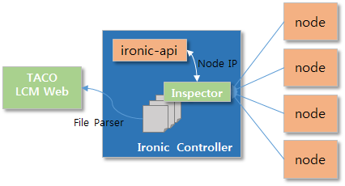

Install Node Inspector¶
Node Inspector 서비스는 ironic standalone의 노드 정보를 수집하는 inspector 기능을 보완하기 위해 개발되었습니다.
Overview¶
inspector flow¶
- ironic API를 통하여 node의 정보를 가져옵니다.
- node들의 agent_url 정보를 통하여 각 node의 ip 정보를 얻습니다.
- remote ssh를 통해 각 노드들의 cpu, memory, network, disk 정보를 수집합니다.
- 각 노드의 수집된 정보는 특정 디렉토리에 json 파일로 저장됩니다.
Architecture¶
Overall Architecture
Install Node Inspector Package¶
$ tar zxvf node-inspector-{version}.tar.gz
$ cd node-inspector
$ pip install -r requirements.txt
$ python setup.py install
Configure Node Inspector¶
node_inspector.conf 의 파일을 열어 환경에 맞게 설정을 합니다.
$ cp etc/node_inspector.conf.sample /etc/node_inspector/node_inspector.conf
$ vi /etc/node_inspector/node_inspector.conf
Schedule Node Inspection¶
introspection job을 수행할 시간을 crontab을 통해 등록합니다.
$ vi /etc/crontab
*/5 * * * * root /usr/local/bin/node_inspector